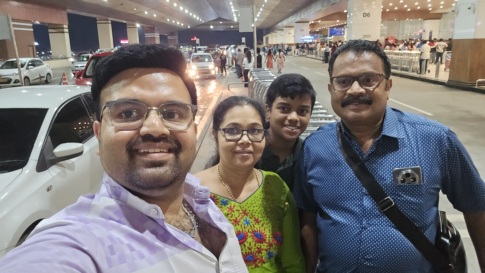
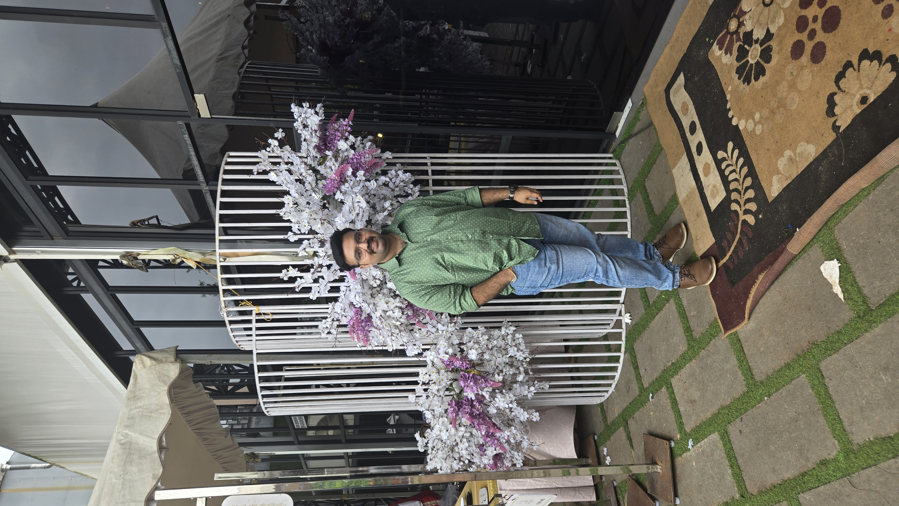
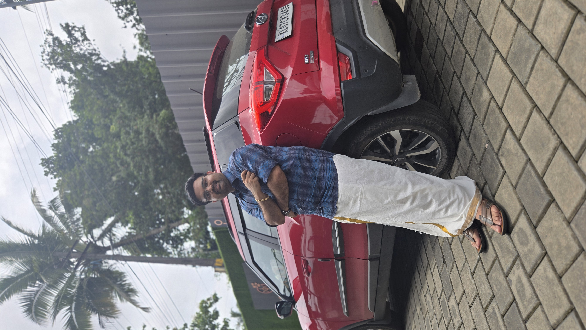
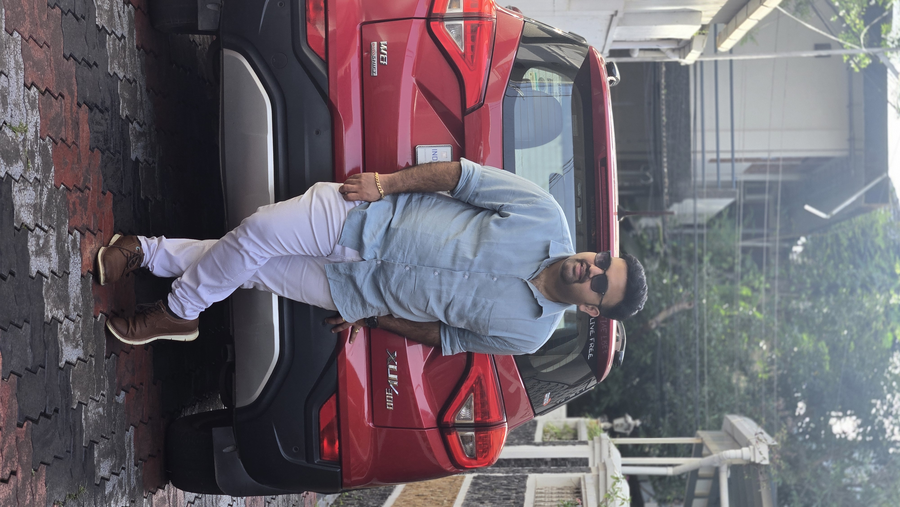

About Me
Hello, I am a God-fearing, simple, and family-oriented person from Kochi. I hold a B.Tech in Computer Science and a PG Diploma in Project Management from Canada. I have experience in DevOps and currently work full-time as a Marketing Executive, while also pursuing a short-term part-time role as a Cloud & DevOps Trainee at AkumenbyQ, Kakkanad (Remote) as I work towards re-entering the IT field. I am marriage-oriented, looking to settle down, and open to relocating abroad. I had undergone hair fixing, which I am comfortable sharing openly.
Primary Information
Date of birth, age, height: 10/02/1996, 30 years, 165cms
Religion: Christian, Syrian Catholic
Location: Kakkanad, Ernakulam, Kerala
Marital Status: Unmarried
Mother Tongue: Malayalam
Parish: St. Francis Assisi Church, Kakkanad
Education & Profession
Education: B.Tech in Computer Science Engineering (SCMS School Of Engineering & Technology), PG Diploma in Project Management (Algoma University, Canada)
Profession: Sales & Marketing Executive (Amazing Rubbers Pvt Limited) & Part-Time Cloud/DevOps Trainee (AkumenbyQ)
Hobbies: Bike/Car Enthusiast, Blogging, Cooking, Long Drives, Volunteer Work
Family Information
Family Status: Upper Middle Class
Father: Shaju N.T (Businessman - Global Jewellers)
Mother: Ligi Shaju (Homemaker)
Siblings: 1 Younger Brother (Edwin Shaju)
Jowin comes from a God-fearing, simple, and well-respected family. This profile is managed by family members.
Photo Gallery
High-resolution profile and landscape photos.




